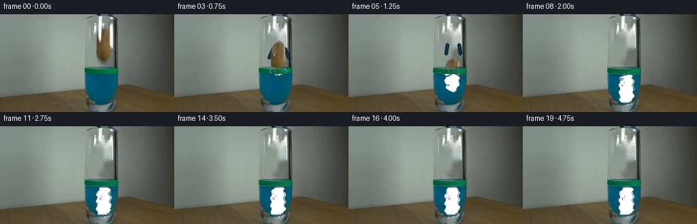
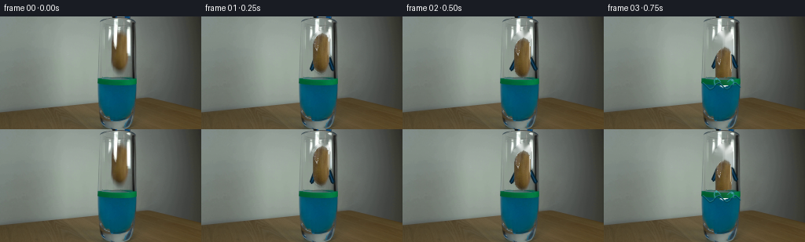

CODING AGENTS AS PIXEL WORLD MODELS
traex/GPT-5.6-Sol · 0142
点击播放 · 原生 RGB 像素
逐轮保存的候选
回放视频、检查图与代码变化。
每份候选均可单独播放。实际图片检查记录在下方工具轨迹中。
候选 01播放与检查图
点击播放 · 原生 RGB 像素


展开代码变化
--- 上一保存版本
+++ 本次保存版本
@@ -0,0 +1,212 @@
+from pathlib import Path
+
+import cv2
+import numpy as np
+from PIL import Image
+
+import artifact_io
+
+
+ROOT = Path(__file__).resolve().parent
+
+
+def potato_assets(source):
+ """Make a clean plate and a textured, softly edged potato cutout."""
+ h, w = source.shape[:2]
+ # The outline follows the actual potato rather than using an ellipse. A
+ # little asymmetry is useful here: it keeps the result photographic.
+ outline = np.array(
+ [(153, 19), (158, 21), (161, 25), (162, 33), (162, 55),
+ (160, 63), (157, 68), (152, 70), (148, 68), (144, 64),
+ (142, 57), (142, 35), (144, 27), (148, 22)], np.int32)
+ full_mask = np.zeros((h, w), np.uint8)
+ cv2.fillPoly(full_mask, [outline], 255)
+
+ # Inpaint only the held object. The narrow exposed portions of the tool
+ # are retained, so when the object leaves they read naturally as jaws.
+ removal = cv2.dilate(full_mask, np.ones((5, 5), np.uint8), iterations=1)
+ clean = cv2.inpaint(source, removal, 5, cv2.INPAINT_TELEA)
+
+ x0, y0, x1, y1 = 136, 16, 168, 74
+ crop = source[y0:y1, x0:x1].copy()
+ cmask = full_mask[y0:y1, x0:x1]
+
+ # Reconstruct the few narrow tool highlights that cross the near side of
+ # the potato. Real source colour and fine mottling remain everywhere else.
+ work = crop.astype(np.float32)
+ R, G, B = [work[:, :, k] for k in range(3)]
+ brown = (R > G + 4) & (G > B + 4) & (R > 48) & (cmask > 0)
+ yy, xx = np.indices(cmask.shape)
+ inside = cmask > 0
+ for y in range(crop.shape[0]):
+ valid = np.where(brown[y])[0]
+ target = np.where(inside[y] & ~brown[y])[0]
+ if len(valid) < 2:
+ continue
+ for x in target:
+ # Nearby median is robust to the shiny metal edges.
+ near = valid[np.abs(valid - x) <= 5]
+ if len(near) == 0:
+ near = valid
+ base = np.median(work[y, near], axis=0)
+ # Preserve a small amount of source luminance as skin texture.
+ lum = float(work[y, x].mean() - work[y, near].mean())
+ work[y, x] = np.clip(base + np.clip(lum, -9, 9), 0, 255)
+
+ # Mild local skin detail, deterministic and restricted to the object.
+ rng = np.random.default_rng(142)
+ grain = cv2.GaussianBlur(rng.normal(0, 2.0, cmask.shape).astype(np.float32),
+ (0, 0), .45)
+ work += grain[:, :, None] * (cmask[:, :, None] / 255.0)
+ crop = np.clip(work, 0, 255).astype(np.uint8)
+
+ # A one-pixel antialiased perimeter avoids cutout-looking hard edges.
+ alpha = cv2.GaussianBlur(cmask, (0, 0), .55)
+ return clean, crop, alpha, (x0, y0), full_mask
+
+
+def composite_patch(dst, patch, alpha, x, y, underwater_y=88, phase=0.0):
+ """Composite the cutout, with a blue-liquid optical treatment below surface."""
+ ph, pw = patch.shape[:2]
+ x, y = int(round(x)), int(round(y))
+ xa, ya = max(0, x), max(0, y)
+ xb, yb = min(dst.shape[1], x + pw), min(dst.shape[0], y + ph)
+ if xa >= xb or ya >= yb:
+ return
+ sx0, sy0 = xa - x, ya - y
+ p = patch[sy0:sy0 + yb - ya, sx0:sx0 + xb - xa].copy()
+ a = alpha[sy0:sy0 + yb - ya, sx0:sx0 + xb - xa].astype(np.float32) / 255
+
+ # Refraction: submerged scanlines wobble very slightly and are tinted by
+ # the cyan-blue liquid. Above-water pixels stay source-photographic.
+ for j, gy in enumerate(range(ya, yb)):
+ if gy >= underwater_y:
+ shift = int(round(1.15 * np.sin(gy * .58 + phase)))
+ p[j] = np.roll(p[j], shift, axis=0)
+ a[j] = np.roll(a[j], shift)
+ depth = min(1.0, (gy - underwater_y) / 28.0)
+ liquid = np.array([5, 75, 91], np.float32)
+ mix = .28 + .10 * depth
+ p[j] = np.clip(p[j] * (1 - mix) + liquid * mix, 0, 255)
+ p[j] = np.clip((p[j] - 105) * .88 + 105, 0, 255)
+
+ roi = dst[ya:yb, xa:xb].astype(np.float32)
+ aa = a[:, :, None]
+ dst[ya:yb, xa:xb] = np.clip(roi * (1-aa) + p.astype(np.float32) * aa,
+ 0, 255).astype(np.uint8)
+
+
+def restore_glass_foreground(frame, source):
+ """Put the rim, level band and reflective glass edges in front of the object."""
+ R, G, B = [source[:, :, i].astype(np.int16) for i in range(3)]
+ yy, xx = np.indices(R.shape)
+ region = (yy >= 75) & (yy <= 140) & (xx >= 121) & (xx <= 177)
+ green = region & (G > R + 20) & (G > B - 8)
+ edge = region & (((xx <= 128) | (xx >= 171)) &
+ ((np.max(source, axis=2) - np.min(source, axis=2) < 55) |
+ (G > R + 12)))
+ # Bottom highlights also establish the front curvature of the tumbler.
+ bottom = region & (yy >= 130) & ((G > R + 8) | (B > R + 8))
+ mask = ((green | edge | bottom).astype(np.uint8) * 255)
+ mask = cv2.GaussianBlur(mask, (0, 0), .35).astype(np.float32) / 255
+ a = (.82 * mask)[:, :, None]
+ frame[:] = np.clip(frame * (1-a) + source * a, 0, 255).astype(np.uint8)
+
+
+def draw_release_jaws(frame, index):
+ """Small blue-black jaw motion makes the release explicit."""
+ if index < 1 or index > 5:
+ return
+ # The tips open for two frames, then withdraw toward the existing shafts.
+ openness = [0, 5, 7, 6, 4, 2][index]
+ lift = max(0, index - 2) * 3
+ left_top, right_top = (145, 53 - lift), (162, 53 - lift)
+ left_tip = (145 - openness, 67 - lift)
+ right_tip = (162 + openness, 67 - lift)
+ navy = (9, 31, 43)
+ blue = (17, 69, 103)
+ cv2.line(frame, left_top, left_tip, navy, 3, cv2.LINE_AA)
+ cv2.line(frame, right_top, right_tip, navy, 3, cv2.LINE_AA)
+ cv2.line(frame, left_top, left_tip, blue, 1, cv2.LINE_AA)
+ cv2.line(frame, right_top, right_tip, blue, 1, cv2.LINE_AA)
+
+
+def liquid_effects(frame, index, source):
+ if index < 3:
+ return
+ # Impact wave is strongest at frames 3-4 and damps smoothly thereafter.
+ age = index - 3
+ amp = 3.8 * np.exp(-age / 3.6)
+ xs = np.arange(126, 174)
+ ys = 88 + amp * np.sin((xs - 151) * .30 + age * 1.9)
+ pts = np.stack([xs, np.rint(ys).astype(int)], axis=1).astype(np.int32)
+ cv2.polylines(frame, [pts], False, (36, 126, 131), 1, cv2.LINE_AA)
+ cv2.polylines(frame, [pts + np.array([0, 1])], False, (0, 61, 80), 1,
+ cv2.LINE_AA)
+
+ # Two restrained splash tongues and droplets at the instant of entry.
+ if index == 3:
+ cv2.ellipse(frame, (145, 86), (4, 8), -24, 185, 350,
+ (53, 145, 149), 1, cv2.LINE_AA)
+ cv2.ellipse(frame, (160, 86), (4, 7), 28, 190, 350,
+ (48, 139, 146), 1, cv2.LINE_AA)
+ cv2.circle(frame, (143, 79), 1, (68, 159, 160), -1, cv2.LINE_AA)
+ cv2.circle(frame, (163, 81), 1, (68, 159, 160), -1, cv2.LINE_AA)
+ elif index == 4:
+ cv2.circle(frame, (145, 84), 1, (55, 145, 148), -1, cv2.LINE_AA)
+
+ # Entrained air bubbles rise after submersion. They are intentionally tiny
+ # at this scale and disappear on reaching the surface.
+ if 4 <= index <= 12:
+ bubbles = [(145, 107, 0), (162, 115, 2), (141, 122, 4), (165, 128, 5)]
+ for bx, by, delay in bubbles:
+ t = index - 4 - delay
+ if t < 0:
+ continue
+ y = by - int(3.2 * t)
+ x = bx + int(round(1.5 * np.sin(t * 1.4 + bx)))
+ if 90 <= y <= 131:
+ cv2.circle(frame, (x, y), 1 if t < 4 else 2,
+ (35, 124, 138), 1, cv2.LINE_AA)
+ if t >= 4:
+ cv2.circle(frame, (x-1, y-1), 1, (99, 165, 165), -1,
+ cv2.LINE_AA)
+
+
+def generate():
+ source = np.asarray(Image.open(ROOT / "first_frame.png").convert("RGB"))
+ clean, potato, alpha, origin, _ = potato_assets(source)
+ frames = []
+
+ # Pixel positions encode free fall, liquid drag, and a small bottom bounce.
+ dy = [0, 2, 8, 20, 33, 44, 54, 61, 65, 67,
+ 66, 67, 67, 67, 67, 67, 67, 67, 67, 67]
+
+ for i in range(20):
+ if i == 0:
+ frames.append(source.copy())
+ continue
+ frame = clean.copy()
+ draw_release_jaws(frame, i)
+
+ # A restrained vertical blur on the two fastest frames conveys speed
+ # without changing the locked camera or making the object transparent.
+ if i in (3, 4):
+ ghost_y = origin[1] + dy[i] - 2
+ composite_patch(frame, potato, (alpha.astype(np.float32) * .16).astype(np.uint8),
+ origin[0], ghost_y, phase=i)
+ composite_patch(frame, potato, alpha, origin[0], origin[1] + dy[i],
+ phase=i * .9)
+
+ restore_glass_foreground(frame, source)
+ liquid_effects(frame, i, source)
+ frames.append(frame)
+
+ frames = np.stack(frames).astype(np.uint8)
+ # Contract-critical identity check.
+ assert np.array_equal(frames[0], source)
+ artifact_io.save(frames, ROOT)
+
+
+if __name__ == "__main__":
+ generate()
可观测工具轨迹
实际执行的命令与返回图片。
命令 1exit 0
/bin/bash -lc "cat GENERATION_RULES.md && printf '\\n---PROMPT---\\n' && cat prompt.txt"
命令 2exit 0
/bin/bash -lc "find . -maxdepth 2 -type f -printf '%p %s bytes\\n' | sort"
命令 3exit 0
/bin/bash -lc "python - <<'PY'
from PIL import Image
import numpy as np
im=np.array(Image.open('first_frame.png').convert('RGB'))
print(im.shape, im.dtype, im.min(), im.max())
# stats by 16x12 tiles mean RGB
h,w,_=im.shape
for y in range(0,h,12):
print('ROW',y, ['%02x%02x%02x'%tuple(im[y:y+12,x:x+16].mean((0,1)).astype(int)) for x in range(0,w,16)])
PY"命令 4exit 0
/bin/bash -lc "python - <<'PY'
import cv2, numpy as np
im=cv2.imread('first_frame.png')
# HSV segment summaries
hsv=cv2.cvtColor(im,cv2.COLOR_BGR2HSV)
segs={
'blue':((85,50,30),(135,255,255)), 'green':((35,45,30),(85,255,255)),
'brown':((3,35,30),(30,255,240)), 'dark':((0,0,0),(180,255,55)),
'bright':((0,0,205),(180,70,255)), 'red':((0,70,30),(15,255,255))}
for n,(lo,hi) in segs.items():
m=cv2.inRange(hsv,np.array(lo),np.array(hi)); nlab,lab,stats,cents=cv2.connectedComponentsWithStats(m)
inds=np.argsort(stats[1:,4])[::-1][:10]+1
print('\\n',n,'pixels',int((m>0).sum()))
for i in inds:
if stats[i,4]<5: continue
print(stats[i].tolist(), np.round(cents[i],1).tolist())
PY"命令 5exit 0
/bin/bash -lc "python - <<'PY'
from PIL import Image
import numpy as np, cv2
im=np.array(Image.open('first_frame.png').convert('RGB'))
hsv=cv2.cvtColor(im,cv2.COLOR_RGB2HSV)
# every 2x2 dominant custom nearest prototypes based HSV/rgb
for y in range(0,142,2):
s=''
for x in range(110,182,2):
p=im[y:y+2,x:x+2].mean((0,1)); h=hsv[y:y+2,x:x+2].mean((0,1)); H,S,V=h
if V<45: c='K'
elif p[2]>p[0]*1.35 and p[2]>p[1]*1.1 and S>50: c='B'
elif p[1]>p[0]*1.18 and p[1]>p[2]*.85 and S>45: c='G'
elif p[0]>p[1]*1.18 and p[1]>p[2]*1.05 and S>40: c='P' # potato brown
elif V>210 and S<50:c='W'
elif V>160 and S<45:c='w'
elif S<35:c='.'
elif p[0]>p[2]*1.25:c='p'
elif p[2]>p[0]*1.12:c='b'
else:c='-'
s+=c
print(f'{y:03d} {s}')
PY"命令 6exit 0
/bin/bash -lc "python - <<'PY'
from PIL import Image
import numpy as np
from sklearn.cluster import KMeans
im=np.array(Image.open('first_frame.png').convert('RGB'))
reg=im[0:78,125:176]
km=KMeans(12,random_state=0,n_init=10).fit(reg.reshape(-1,3))
c=km.cluster_centers_.round().astype(int); n=np.bincount(km.labels_)
order=np.argsort(n)[::-1]
for j in order: print(j,n[j],c[j])
lab=km.labels_.reshape(reg.shape[:2])
mp={j:hex(i)[2:].upper() for i,j in enumerate(order)}
for y in range(0,78):
if y%2:continue
s=''.join(mp[lab[y,x]] for x in range(0,51))
print(f'{y:02d}',s)
PY"命令 7exit 0
/bin/bash -lc "python - <<'PY'
from PIL import Image
import numpy as np
im=np.array(Image.open('first_frame.png').convert('RGB'))
for y in range(0,78,4):
print('\\ny=',y)
for x in range(132,172,2):
print(f'{x}:{im[y,x].tolist()}',end=' ')
print()
PY"命令 8exit 0
/bin/bash -lc "python - <<'PY'
import cv2,numpy as np
im=cv2.imread('first_frame.png')[:,:,::-1]
R,G,B=[im[:,:,i].astype(int) for i in range(3)]
m=(R-G>6)&(G-B>5)&(R>45)
m[:18]=0;m[71:]=0;m[:,:140]=0;m[:,165:]=0
# CC touching center
n,l,st,c=cv2.connectedComponentsWithStats(m.astype('uint8'))
for i in range(1,n):
if st[i,4]>5: print(i,st[i],c[i])
# spans selected largest
k=1+np.argmax(st[1:,4]); mm=l==k
for y in range(15,75):
xs=np.where(mm[y])[0]
if len(xs):print(y,xs.min(),xs.max(),len(xs))
PY"命令 9exit 0
/bin/bash -lc "sed -n '1,240p' artifact_io.py"
命令 10exit 0
/bin/bash -lc "python generate.py && python - <<'PY'
from pathlib import Path
from PIL import Image
import numpy as np
f=np.stack([np.array(Image.open(f'frames/{i:02d}.png')) for i in range(20)])
s=np.array(Image.open('first_frame.png').convert('RGB'))
print('shape/dtype',f.shape,f.dtype)
print('frame0 exact',np.array_equal(f[0],s))
for i in range(20):
d=np.abs(f[i].astype(int)-s.astype(int))
print(i, 'changed',np.any(d,axis=2).sum(),'mae',round(d.mean(),3),'bbox', end=' ')
yy,xx=np.where(np.any(d,axis=2))
print((xx.min(),yy.min(),xx.max(),yy.max()) if len(xx) else None)
print('outputs',[(p.name,p.stat().st_size) for p in [Path('pixels.npz'),Path('inspection.png'),Path('index.html')]])
PY"保存候选 1 份；完成命令 10 次；可验证图片返回 0 张。原始 API 响应与完整日志保留在本地。